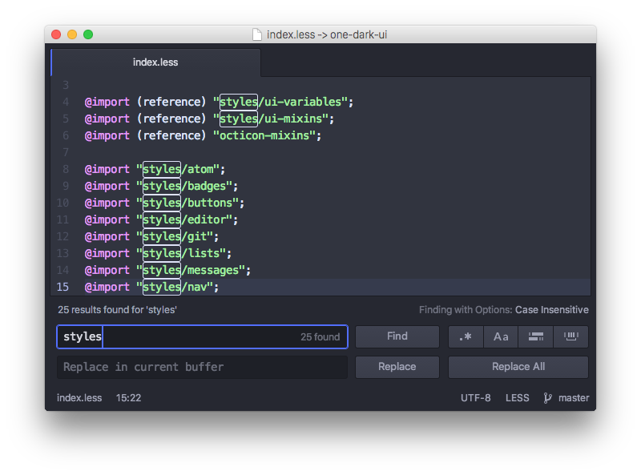

Chapter 1: Getting Started
Chapter 2: Using Atom
- Atom Packages
- Moving in Atom
- Atom Selections
- Editing and Deleting Text
- Find and Replace
- Snippets
- Autocomplete
- Folding
- Panes
- Pending Pane Items
- Grammar
- Version Control in Atom
- GitHub package
- Writing in Atom
- Basic Customization
- Summary
Chapter 3: Hacking Atom
- Tools of the Trade
- The Init File
- Package: Word Count
- Package: Modifying Text
- Package: Active Editor Info
- Creating a Theme
- Creating a Grammar
- Creating a Legacy TextMate Grammar
- Publishing
- Iconography
- Debugging
- Writing specs
- Handling URIs
- Cross-Platform Compatibility
- Converting from TextMate
- Hacking on Atom Core
- Contributing to Official Atom Packages
- Summary
Chapter 4: Behind Atom
- Configuration API
- Keymaps In-Depth
- Scoped Settings, Scopes and Scope Descriptors
- Serialization in Atom
- Developing Node Modules
- Interacting With Other Packages Via Services
- Maintaining Your Packages
- How Atom Uses Chromium Snapshots
- Summary
Appendix A: Resources
Appendix B: Shadow DOM
Appendix C: Upgrading to 1.0 APIs
Appendix D: Atom server-side APIs
Improve this page
Find and Replace
Finding and replacing text in your file or project is quick and easy in Atom.
- Cmd+FCtrl+F - Search within a buffer
- Cmd+Shift+FCtrl+Shift+F - Search the entire project
If you launch either of those commands, you'll be greeted with the Find and Replace panel at the bottom of your screen.

To search within your current file you can press Cmd+FCtrl+F, type in a search string and press Enter (or Cmd+GF3 or the "Find Next" button) multiple times to cycle through all the matches in that file. The Find and Replace panel also contains buttons for toggling case sensitivity, performing regular expression matching and scoping the search to selections.
If you type a string in the replacement text box, you can replace matches with a different string. For example, if you wanted to replace every instance of the string "Scott" with the string "Dragon", you would enter those values in the two text boxes and press the "Replace All" button to perform the replacements.
Note: Atom uses JavaScript regular expressions to perform regular expression searches.
When doing a regular expression search, the replacement syntax to refer back to search groups is $1, $2, … $&. Refer to JavaScript's guide to regular expressions to learn more about regular expression syntax you can use in Atom.
You can also find and replace throughout your entire project if you invoke the panel with Cmd+Shift+FCtrl+Shift+F.

This is a great way to find out where in your project a function is called, an anchor is linked to or a specific misspelling is located. Click on the matching line to jump to that location in that file.
You can limit a search to a subset of the files in your project by entering a glob pattern into the "File/Directory pattern" text box. For example, the pattern src/*.js would restrict the search to javascript files in the src directory. The "globstar" pattern (**) can be used to match arbitrarily many subdirectories. For example, docs/**/*.md will match docs/a/foo.md, docs/a/b/foo.md, etc. You can enter multiple glob patterns separated by commas, which is useful for searching in multiple file types or subdirectories.
When you have multiple project folders open, this feature can also be used to search in only one of those folders. For example, if you had the folders /path1/folder1 and /path2/folder2 open, you could enter a pattern starting with folder1 to search only in the first folder.
Press Esc while focused on the Find and Replace panel to clear the pane from your workspace.
The Find and Replace functionality is implemented in the find-and-replace package and uses the scandal Node module to do the actual searching.